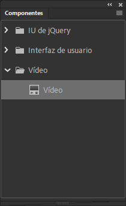

Estudio del diseño de movimiento
Competencia
Integrar elementos, técnicas y herramientas multimedia a través del conocimiento de lenguajes básicos de programación para diseñar proyectos interactivos, con una visión global y crítica, tomando en cuenta las necesidades estéticas y comerciales de un contexto específico.
Unidad 1
- Programación de interfaces
- Introducción a la programación orientada a objetos (OOP)
- Lenguaje Actionscript 3 - AS3
- Fundamentos de Actionscript
- Semejanzas y diferencias con javascript
- Definición de un declaración
- Uso de controladores
- Manejadores de eventos
- Uso de funciones
- Creación y uso de variables
- Trabajo con objetos y símbolos
Unidad 2
- Diseño de entornos virtuales
- Aplicación de la programación para el diseño de escenarios
- Desplazamientos
- Recorridos
- Scroll
- Ubicación por medio de propiedades X y Y
Unidad 3
- Herramientas de programación orientadas a la interactividad
- Declaración de funciones
- Asignación de funciones
- Operadores matemáticos
- Ciclos de control
- Bucles
- Funciones dinámicas
Unidad 4
- Creación de interfaces dinámicas multimedia
- Planos y profundidad
- Selección múltiple
- Controles de audio
- Controles de video
- Creación de archivos y formatos para distribución
A partir de aquí se desarrollara cada uno de los puntos de cada unidad y que es la base a estudiar.
Unidad 1
- Programación de interfaces
- Introducción a la programación orientada a objetos (OOP)
- Lenguaje Actionscript 3 - AS3
- Una nueva máquina virtual de ActionScript, denominada AVM2, que utiliza un nuevo conjunto de instrucciones de código de bytes y proporciona importantes mejoras de rendimiento.
- Una base de código de compilador más moderna que realiza mejores optimizaciones que las versiones anteriores del compilador.
- Una interfaz de programación de aplicaciones (API) ampliada y mejorada, con un control de bajo nivel de los objetos y un auténtico modelo orientado a objetos.
- Una API XML basada en la especificación de ECMAScript para XML (E4X) (ECMA-357 edición 2). E4X es una extensión del lenguaje ECMAScript que añade XML como un tipo de datos nativo del lenguaje.
- Un modelo de eventos basado en la especificación de eventos DOM (modelo de objetos de documento) de nivel 3.
- Fundamentos de Actionscript
- El nombre de la variable
- El tipo de datos que puede almacenarse en la variable
- El valor real almacenado en la memoria del equipo<
- String: un valor de texto como, por ejemplo, un nombre o el texto de un capítulo de un libro
- Numeric: ActionScript 3.0 incluye tres tipos de datos específicos para datos numéricos:
- Number: cualquier valor numérico, incluidos los valores fraccionarios o no fraccionarios
- int: un entero (un número no fraccionario)
- uint: un entero sin signo, es decir, que no puede ser negativo
- Boolean: un valor true (verdadero) o false (falso), por ejemplo, si un conmutador está activado o si dos valores son iguales
- MovieClip: un símbolo de clip de película
- TextField: un campo de texto dinámico o de texto de entrada
- SimpleButton: un símbolo de botón
- Date: información sobre un solo momento temporal (una fecha y hora)
- Semejanzas y diferencias con javascript
- Código tipado dinámica y estáticamente
- Paquetes, clases e interfaces
- Modelo de herencia OOP estándar (no basado en prototipos, tipado estáticamente)
- Tipo de datos UINT e INT E4X (ECMA-357)
- Compilación condicional con seguridad de tipos (ES4)
- Definición de un declaración
- Uso de controladores
- Manejadores de eventos
- Uso de funciones
- Creación y uso de variables
- Trabajo con objetos y símbolos
OOP (Programación orientada a objetos) es un paradigma de programación en el que los datos son encapsulados en objetos, los cuales tienen su propio comportamiento.
Un ejemplo de esto es el lenguaje JavaScript esta altamente orientado a objetos. Sigue el modelo basado en prototipado (en oposición al modelo basado en clases).
ActionScript es el lenguaje de programación para los entornos de tiempo de ejecución de Adobe® Flash® Player y Adobe® AIR™. Entre otras muchas cosas, activa la interactividad y la gestión de datos en el contenido y las aplicaciones de Flash, Flex y AIR.
ActionScript se ejecuta mediante la máquina virtual ActionScript (AVM), que forma parte de Flash Player y AIR. El código ActionScript suele transformarse en formato de código de bytes mediante el compilador. (Bytecode un tipo de lenguaje que los ordenadores pueden escribir y comprender.) Entre los ejemplos de compiladores se incluyen el incorporado en Adobe® Flash® Professional, en Adobe® Flash® Builder™ y el SDK de Adobe® Flex™. El código de bytes está incorporado en los archivos SWF ejecutados por Flash Player y AIR.
ActionScript 3.0 ofrece un modelo de programación robusto que resultará familiar a los desarrolladores con conocimientos básicos sobre programación orientada a objetos. Algunas de las principales funciones de ActionScript 3.0 que mejoran las versiones anteriores son:
¿Para qué sirven los programas informáticos?
En primer lugar, resulta útil entender qué es un programa informático y para qué sirve. Un programa informático se caracteriza por dos aspectos principales:
Un programa es una serie de instrucciones o pasos que debe llevar a cabo el equipo.
Cada paso implica en última instancia la manipulación de información o datos.
En general, un programa informático es simplemente una lista de instrucciones paso a paso que se dan al equipo para que las lleve a cabo una a una. Cada una de las instrucciones se denomina sentencia. En ActionScript, todas las sentencias se escriben con un punto y coma al final.
Lo que realiza básicamente una instrucción dada en un programa es manipular algún bit de datos almacenado en la memoria del equipo. Un ejemplo sencillo consiste en ordenar al equipo que añada dos números y almacene el resultado en su memoria. En un caso más complejo, se podría tener un rectángulo dibujado en la pantalla y escribir un programa para moverlo a algún otro lugar de la pantalla. El equipo recuerda determinada información relativa al rectángulo: las coordenadas x e y que indican su ubicación, la anchura y altura, el color, etc. Cada uno de estos bits de información se almacena en algún lugar de la memoria del equipo. Un programa para mover el rectángulo a una ubicación diferente podría incluir pasos como “cambiar la coordenada x a 200; cambiar la coordenada y a 150”. Es decir, especificando nuevos valores para las coordenadas x e y. En segundo plano, el equipo procesa estos datos de algún modo para convertir realmente estos números en la imagen que aparece en pantalla. Sin embargo, en el nivel básico de detalle que interesa, basta con saber que el proceso de “mover un rectángulo en pantalla” únicamente implica un cambio de bits de datos en la memoria del equipo.
Variables y constantes
Principalmente la programación implica el cambio de partes de información en la memoria del equipo. Por lo tanto, resulta importante disponer de algún modo de representar una sola parte de información en un programa. Una variable es un nombre que representa un valor en la memoria del equipo. Cuando se escriben sentencias para manipular valores, se escribe el nombre de la variable en lugar del valor; cuando el equipo ve el nombre de la variable en el programa, busca en su memoria y utiliza el valor que allí encuentra. Por ejemplo, si hay dos variables denominadas value1 y value2, cada una de las cuales contiene un número, para sumar esos dos números se puede escribir la siguiente sentencia:
value1 + value2
Cuando lleve a cabo los pasos indicados, el equipo buscará los valores de cada variable y los sumará.
En ActionScript 3.0, una variable se compone realmente de tres partes distintas:
Se acaba de explicar el modo en que el equipo utiliza el nombre como marcador de posición del valor. El tipo de datos también es importante. Cuando se crea una variable en ActionScript, se determina el tipo específico de datos que va a incluir. A partir de aquí, las instrucciones del programa sólo pueden almacenar ese tipo de datos en la variable. El valor se puede manipular con las características particulares asociadas a su tipo de datos. En ActionScript, para crear una variable (se conoce como declarar la variable), se utiliza la sentencia var:
var value1:Number;Con este ejemplo se indica al equipo que cree una variable denominada value1, que sólo puede incluir datos Number. (“Number” es un tipo de datos específico definido en ActionScript.) También es posible almacenar un valor directamente en la variable:
var value2:Number = 17;Adobe Flash Professional
En Flash Professional existe otra forma posible de declarar una variable. Cuando se coloca un símbolo de clip de película, un símbolo de botón o un campo de texto en el escenario, se le puede asignar un nombre de instancia en el inspector de propiedades. En segundo plano, Flash Professional crea una variable con el mismo nombre que la instancia. Este nombre se puede utilizar en el código ActionScript para representar a ese elemento del escenario. Por ejemplo, supongamos que se dispone de un símbolo de clip de película en el escenario y se le asigna el nombre de instancia rocketShip. Siempre que se utilice la variable rocketShip en el código ActionScript, en realidad se está manipulando ese clip de película.
Una constante es similar a una variable. Se trata de un nombre que representa un valor en la memoria del equipo con un tipo especifico de datos. La diferencia es que a una constante sólo se le puede asignar un valor cada vez en el curso de una aplicación ActionScript. Tras asignar un valor a una constante, éste permanecerá invariable en toda la aplicación. La sintaxis para declarar una constante es prácticamente la misma que para la declaración de una variable. La única diferencia radica en que se utiliza la palabra clave const en lugar de var:
const SALES_TAX_RATE:Number = 0.07;Una constante resulta útil para definir un valor que se utilizará en varios puntos de un proyecto y que no cambiará en circunstancias normales. Cuando se utiliza una constante en lugar de un valor literal el código resulta más legible. Por ejemplo, dos versiones del mismo código. En uno se multiplica un precio por SALES_TAX_RATE. En el otro el precio se multiplica por 0.07. La versión que utiliza la constante SALES_TAX_RATE resulta más fácil de entender. Asimismo, supongamos que cambia el valor definido por la constante. Si se utiliza una constante para representar el valor en el proyecto, el valor se puede cambiar en un lugar (la declaración de la constante). Por el contrario, tendría que modificarse en distintos lugares cuando se utilizan valores literales especificados en el código.
Tipos de datos
En ActionScript, hay muchos tipos de datos que pueden utilizarse como el tipo de datos de las variables que se crean. Algunos de estos tipos de datos se pueden considerar “sencillos” o “fundamentales”:
El tipo de datos sencillo representa a un solo elemento de información: por ejemplo, un único número o una sola secuencia de texto. Sin embargo, la mayoría de los tipos de datos definidos en ActionScript son tipos de datos complejos. Representan un conjunto de valores en un solo contenedor. Por ejemplo, una variable con el tipo de datos Date representa un solo valor (un momento temporal). No obstante, ese valor de fecha se representa en forma de diferentes valores: el día, el mes, el año, las horas, los minutos, los segundos, etc., los cuales son números individuales. Generalmente una fecha se suele percibir como un solo valor que se puede tratar como tal creando una variable Date. Sin embargo, internamente el equipo lo considera un grupo de varios valores que conjuntamente definen una sola fecha.
La mayoría de los tipos de datos incorporados y los tipos de datos definidos por los programadores son complejos. Algunos de los tipos de datos complejos que podrían reconocerse son:
Para referirse a los tipos de datos, a menudo se emplean como sinónimos las palabras clase y objeto. Una clase es simplemente una definición de un tipo de datos. Se trata de una especie de plantilla para todos los objetos del tipo de datos, como afirmar que “todas las variables del tipo de datos Example tienen estas características: A, B y C”. Por otra parte, un objeto es una instancia real de una clase. Por ejemplo, una variable cuyo tipo de datos sea MovieClip se podrá describir como un objeto MovieClip. Se puede decir lo mismo con distintos enunciados:
El tipo de datos de la variable myVariable es Number.
La variable myVariable es una instancia de Number.
La variable myVariable es un objeto Number.
La variable myVariable es una instancia de la clase Number.
https://help.adobe.com/es_ES/as3/learn/WS5b3ccc516d4fbf351e63e3d118a9b90204-7fe0.html
En primer lugar, ActionScript 3 y JavaScript están definidos en ECMA-262, por lo que tienen mucho en común. Ambos lenguajes cuentan con herencia de prototipos, por ejemplo. Sin embargo, no es correcto que ActionScript implemente completamente ES4.
ActionScript implementa un par de funciones que no están definidas en ECMA-262 y algunas, pero definitivamente no todas, de ES4.
Entonces, ¿qué agrega AS3 a ECMA-262? Esas son también las diferencias con JavaScript:
Las declaraciones deben realizarse antes que cualquier uso de la función.
Declaración de funciones. La declaración da a conocer la función al compilador, de forma que a partir del punto de declaración, ya se pueden realizar invocaciones a la misma. A su vez, la definición estará en algún otro punto del programa, tal vez en una librería externa (en forma ya compilada) o en otro módulo de programa (como texto fuente). Una función puede ser declarada varias veces en un mismo programa, y las declaraciones pueden aparecer en cualquier orden; en un fichero fuente o en varios, pero en cualquier caso antes de su uso, es decir: antes de cualquier invocación a la función. Además de declarar el nombre de la función y el tipo devuelto (por defecto se supone int) se declaran también el tipo de los parámetros.
Las funciones, también llamados métodos, nos permiten dividir el trabajo que hace un programa, en tareas más pequeñas separadas de la parte principal. Ese es el concepto de función en programación.
https://lenguajesdeprogramacion.net/diccionario/que-es-una-funcion-o-metodo-en-programacion/
International Business Machines Corporation, empresa mundialmente como IBM, propone el siguiente concepto de variable de programación:
“Una variable en programación es un elemento de datos cuyo valor puede cambiar durante el curso de la ejecución de un programa”. Más aún, los expertos afirman que “el nombre de la variable debe seguir el convenio de denominación de un identificador (carácter alfabético o número y el signo de subrayado).”
En palabras más sencillas, si queremos explicar qué es una variable en programación podemos decir que es una unidad de almacenamiento y recuperación de datos con valores que pueden cambiar, la cual se identifica con un nombre único en el código del programa.
Con ActionScript®, se pueden controlar los símbolos en tiempo de ejecución. Con Actionscript, es posible crear interacción y agregar otras funcionalidades a los archivos FLA que no es posible conseguir únicamente con la línea de tiempo.
https://helpx.adobe.com/mx/animate/using/symbols-actionscript.htmlUnidad 2
- Diseño de entornos virtuales
- Aplicación de la programación para el diseño de escenarios
- Desplazamientos
- Recorridos
- Scroll
- Ubicación por medio de propiedades X y Y
Unidad 3
- Herramientas de programación orientadas a la interactividad
- Declaración de funciones
- Asignación de funciones
- Operadores matemáticos
- + adicción
- -- decremento
- / división
- ++ incremento
- % modulo
- * multiplicación
- - substracción
- Ciclos de control
- Bucles
- Funciones dinámicas
- Creación de interfaces dinámicas multimedia
- Planos y profundidad
- Selección múltiple
- Controles de audio
- Controles de video 
- Creación de archivos y formatos para distribución
Además de ActionScript® también podemos generar interactividad usando JavaScript Animate tiene la posibilidad de trabajar con estas dos herramientas de programación.
Una función es la unidad básica de código que puede invocarse en ActionScript. Tanto las funciones definidas por el usuario como las funciones incorporadas de ActionScript se representan mediante objetos Function, que son instancias de la función Function.
https://help.adobe.com/es_ES/FlashPlatform/reference/actionscript/3/Function.htmlEn ActionScript 3.0 las funciones son objetos. Al crear una función, se crea un objeto que no sólo se puede pasar como un parámetro a otra función, sino que además tiene propiedades y métodos asociados.
https://help.adobe.com/es_ES/as3/learn/WS5b3ccc516d4fbf351e63e3d118a9b90204-7fd0.htmllos operadores matemáticos son los siguientes:
https://help.adobe.com/es_ES/FlashPlatform/reference/actionscript/3/operators.html
Las sentencias de bucle permiten ejecutar un bloque específico de código repetidamente utilizando una serie de valores o variables. Adobe recomienda escribir siempre el bloque de código entre llaves ({}). Aunque puede omitir las llaves si el bloque de código sólo contiene una sentencia, no es recomendable que lo haga por la misma razón expuesta para las condicionales: aumenta la posibilidad de que las sentencias añadidas posteriormente se excluyan inadvertidamente del bloque de código. Si posteriormente se añade una sentencia que se desea incluir en el bloque de código, pero no se añaden las llaves necesarias, la sentencia no se ejecutará como parte del bucle.
https://help.adobe.com/es_ES/as3/learn/WS5b3ccc516d4fbf351e63e3d118a9b90204-7fcf.htmlHay dos formas de definir una función en ActionScript 3.0: se puede utilizar una sentencia de función o una expresión de función. La técnica que se elija dependerá de si se prefiere un estilo de programación más estático o más dinámico. Si se prefiere la programación estática, o en modo estricto, se deben definir las funciones con sentencias de función. Las funciones deben definirse con expresiones de función si existe la necesidad específica de hacerlo. Las expresiones de función se suelen usar en programación dinámica (en modo estándar).
Unidad 4
La creación de interfaces dinámicas, se logra con la integración de elemento gráficos y programación. dentro de las nuevas tendencias de user interfaces (UI) es que en la actualidad se esta usando.
El Efecto de profundidad de campo (parallax effect) en bastante sencillo de hacer usando interpolaciones de movimiento sencillas. no requiriendo usar código

Por medio de los segmentos de código podemos ampliar las funcionalidades del audio y del video
Existe en ActionScript® también los componentes que nos permiten agregar video sin usar código
En Animate tenemos la posibilidad de generar distinos archivos para distibución, desde HTML con JavaScript, pasando por AIR tecnologia de Adobe y poder empaquetar los archivos para producir una APK que se suba a Play Store y a App Store, también ya hay un nuevo jugador en la escena que es App Gallery de Huawei, para poder hacer esto tienes que tener cuenta de desarrollador en las tres plataformas.